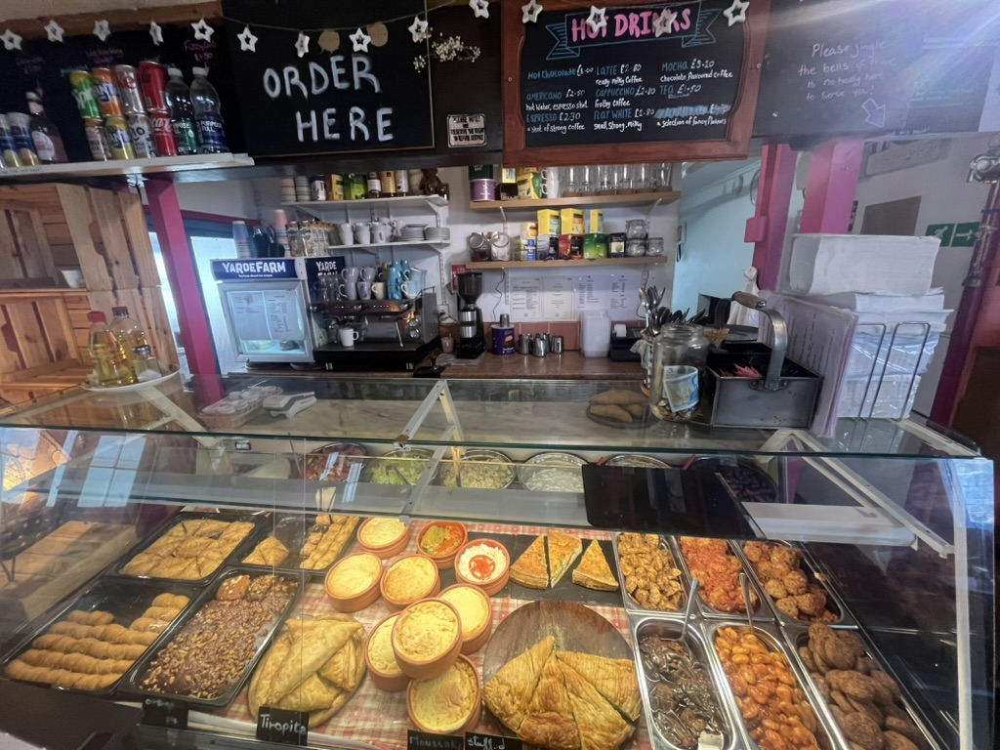
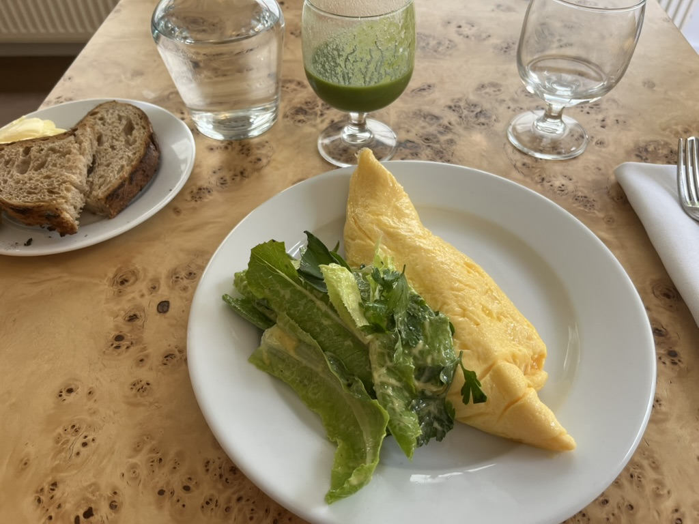

Oxford
- Georgina's - Greek place in the covered market. Pretty much everything's <£10 and v generous portions. Staff v warm. Highly reccomend Spanakopita, salad box (takeout - £3.50), aubergine w cheese. Can't speak for anything else on the menu.

- Jericho Coffee Traders - high street location.
- Lula's - Ethiopian.
- Hamblin - most amazing bakery. Iffley road location is the best.
- The Library (pub/bar). Marg mondays v good.
- Za'atar Bake. Never been, but feel like it would be good.
- Tse Noodle. Imo the rice dishes are better than the noodle dishes. The egg & tomato rice is great.

- Edamamé. V yummy Japanese food.
- Objects of Use.
- Goodies.
- Taylors. Chain - very trusty lunch spot.
- King's Arms. Pub.
- The Bear. Pub.
- The Lamb and Flag. Pub.
- White Rabbit. Pub with good pizza.
- Najars. Nice wraps ~£4.
- Dishoom Permit Room. Dishoom.
- Missing Bean. Trusty café chain.
- Medley. Gorgeous beer garden + serve pizza - summer.
- White Horse. Pub - sit outside on Broad Street in summer.
- Pet Gat. Baker - supplier for lots of cafés in Oxford. V good cardamom bun.
- The Star. Pub.
- Coffee shops. JCT > New Ground > Missing Bean > Society would be my ranking.
- Pubs. Season-dependent. The Lamb and Flag is my overall favourite.
- Sweet treat. Depends on the day. Hamblin overall winner. Ginger cookie at New Ground. White chocolate macadamia cookie from JCT. White chocolate raspberry muffin from JCT. Pet Gat cardamom bun. Think JCT have suppliers which changes the offering by day - same with New Ground so can be hit or miss.
Amsterdam
- De Linden. Breakfast, lunch and drinks.
- 4850. Coffee, cardamom buns, sandwiches. Also a winebar.
- Café Twee Prinsen & Kikkies
- Van Stapele Koekmakerij
- Kometen Brood. (NDSM).
- Kitchen at Carmen.

- De Kas. Nice restaurant.
- Rijks. Nice restaurant.
- La Fiorita. Nice italian food.
- Bakkerij Louf. Bakery with 4 locations.
- Bakkerij Solinger. (NDSM).
- Rijksmuseum.
- Stedelijk Museum.
- Van Gogh Museum. Highly reccomend - better than I expected.
- Filmtheater Kriterion.
- Athenaeum Boekhandel.
- Oficina. Food concept store.
- The Lebanese Sajeria. Chain with 3 locations.
- Nho Girl.
- Zomer Locket.
- Buurtcafé de Tros.
- Bakkerij "Mediterranée".

- Archive 1906. Vintage clothes shop.
- Haarlemmerstraat. Shopping.
- De Willem. Really nice restaurant / café by the water.
Los Angeles
- Goodboybob.
- Hooked, Venice.
- Motoring.
- The Getty Centre. (The Getty Villa is cool too).
- Los Angeles County Museum of Art (LACMA).
- Mashti Malone's. Persian Ice Cream shop.
- Disneyland.
- Gangnam. Korean food v authentic. Los Angeles has a v large Korean population.
- Republique. Breakfast.
- Jyan Isaac. Bakery.
- Tartine. Bakery.
- The Gumbo Pot. Cajun/Creole food.
London
- Toklas
- Violet
- Towpath
- e5
- Dusty
- Monmouth
- St John Restaurant
- Italo Deli (Vauxhall)
- Quo Vadis
- Dishoom
- Berenjak.
- Soma.
- Crisp W6.
Paris
- Paperboy.
- Musée D'Orsay.
- L'As du Fallafel.
Copenhagen
- POPL.
- Poulette.
- Juno.
- Hart Bageri. (Chain). Cardamom croissant.
- La Banchina.
West Highland Way
- Milngavie
- Drymen
- Rowardennan
- Inverarnan
- Tyndrum
- Kings House
- Kinlochleven
- Fort William
Other